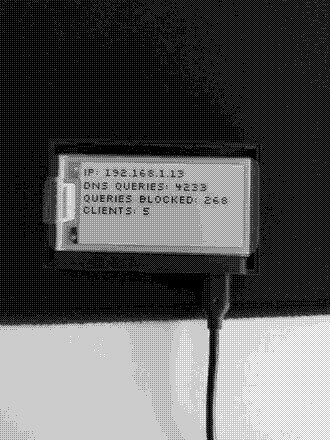

Pi-hole setup on a Raspberry Pi Zero W
Grouping several notes and resources found online to set up a Pi-hole on a Raspberry Pi Zero W, step by step.
Initial SD card setup
Plug your micro SD card on your machine and install Raspberry Pi OS lite. The easiest way to do this is to use the official Raspberry Pi imager, found here: https://www.raspberrypi.org/downloads/.
Unplug it and replug it for the following steps.
Finish setting up the SD card
You should see a Boot folder in your SD card if Raspberry Pi OS has been installed properly. Several files need to be created and edited at the root of this directory:
touch wpa_supplicant.conf
touch ssh
Add the following lines to wpa_supplicant.conf:
ctrl_interface=DIR=/var/run/wpa_supplicant GROUP=netdev
update_config=1
country=FR # Or another country, depending on yours.
Next, run the command wpa_passphrase <ssid-name> <password-name> on your current machine, wrapping the parameters of your Wi-Fi connection in quotes if they contain spaces.
Copy the output of the command in wpa_supplicant.conf, and delete the commented_out psk line before saving. The last line will store your Wi-Fi password a bit more securely than plaintext.
wpa_supplicant.conf should now look like this:
ctrl_interface=DIR=/var/run/wpa_supplicant GROUP=netdev
update_config=1
country=US
network={
ssid="YOURSSID"
psk="YOURPASSWORD"
scan_ssid=1 # Add this line too!
}
Next, add the following line at the end of config.txt to enable troubleshooting through a USB console cable:
enable_uart=1
The ssh file does not need to be edited and enable SSH on its own.
Unplug the micro SD card and plug it in your Raspberry Pi Zero W.
Power up and configuration
Power up your Raspberry Pi on your machine with a USB cable, by using the micro USB slot on the far right. The green LED light should show some activity, after a few minutes ping your Pi from your machine: ping raspberrypi.local.
If this worked, you should be able to SSH to your Pi: ssh pi@raspberrypi.local, with raspberry as the default password.
Next, let's update the Pi Zero:
sudo apt update
sudo apt upgrade
Then change the default password to something secure with passwd.
If you have SSH keys on your machine, it would be much better to use them to connect to your Pi Zero rather than a password. Create a .ssh folder on your Pi with appropriate permissions:
mkdir ~/.ssh
chmod 700 ~/.ssh
Copy your public key on your machine from ~/.ssh/id_rsa.pub, then create the file ~/.ssh/authorized_keys on your Pi Zero and paste it inside. Run chmod 600 ~/.ssh/authorized_keys too to set the right permissions.
Next, edit /etc/ssh/sshd_config on your Pi and add or edit the following lines like the following:
PasswordAuthentication no
PubkeyAuthentication yes
ChallengeResponseAuthentication no
PermitRootLogin no
This will harden SSH security on your Pi and use exclusively keys to connect. Reboot with sudo shutdown -r now to apply changes and be done with it.
Extend the life of your SD card
SD cards are fragile, and will fail way more often than any other kind of storage. To extend the life of your SD card a bit, you can disable swap on Raspberry Pi OS by removing the following package:
sudo apt remove dphys-swapfile
Install Pi-hole
Installing Pi-hole is easy if you don't wanna review the source code first, simply run curl -sSL https://install.pi-hole.net | bash. Picking default options is fine.
Use unbound for your own recursive DNS server
Follow instructions here if you wish to use unbound rather than trusting google's DNS servers or others: https://docs.pi-hole.net/guides/unbound/.
Router settings
One of the easiest ways to let your Pi-hole become the default DNS server for all your machines is to disable DHCP on your router and let your Pi Zero handle it. Since this depends on your ISP and router model, you have to search how to disable this on your own.
It is also recommended to disable IPv6, as this can leak DNS queries that your Pi-hole won't handle.
Once you've done that, go to pi.hole/admin and enable DHCP in settings. It might be required to reboot your Pi Zero and your router for changes to take effect.
Optional: display stats with a waveshare 2.13inch e-paper HAT

Enable SPI on your Pi Zero first:
sudo raspi-config
# Choose Interfacing Options -> SPI -> Yes to enable SPI interface.
Reboot with sudo shutdown -r now.
Next, install BCM2835 libraries:
wget http://www.airspayce.com/mikem/bcm2835/bcm2835-1.60.tar.gz
tar zxvf bcm2835-1.60.tar.gz
cd bcm2835-1.60/
sudo ./configure
sudo make
sudo make check
sudo make install
Install wiringpi last version too:
cd /tmp
wget https://project-downloads.drogon.net/wiringpi-latest.deb
sudo dpkg -i wiringpi-latest.deb
gpio -v # Should output version 2.52.
Install related python3 libraries:
sudo apt update
sudo apt install python3-pip python3-pil python3-numpy
sudo pip3 install RPi.GPIO
sudo pip3 install spidev
Test if your display works with waveshare examples:
git clone https://github.com/waveshare/e-Paper
cd e-Paper/RaspberryPi\&JetsonNano/python/examples
python3 epd_2in13_V2_test.py # Let it run its whole course.
Get this font:
wget http://kottke.org/plus/type/silkscreen/download/silkscreen.zip
unzip silkscreen.zip
You can pick slkscr.ttf and ditch the rest.
If you don't mind working at the root of your home folder, copy the following libraries:
cp e-Paper/RaspberryPi&JetsonNano/python/lib/waveshare_epd/epd2in13_V2.py ~
cp e-Paper/RaspberryPi&JetsonNano/python/lib/waveshare_epd/epdconfig.py ~
And add the following script in your home folder too, as display.py:
#!/usr/bin/env python3
import epd2in13_V2
from PIL import Image, ImageDraw, ImageFont
import subprocess
import requests
import json
import time
epd = epd2in13_V2.EPD()
font = ImageFont.truetype('/home/pi/slkscr.ttf', 18)
api_url = 'http://localhost/admin/api.php'
image = Image.new('1', (epd.height, epd.width), 255)
draw = ImageDraw.Draw(image)
epd.init(epd.FULL_UPDATE)
epd.displayPartBaseImage(epd.getbuffer(image))
epd.init(epd.PART_UPDATE)
partial_refresh_count = 0
while True:
try:
try:
r = requests.get(api_url)
data = json.loads(r.text)
DNSQUERIES = data['dns_queries_today']
ADSBLOCKED = data['ads_blocked_today']
CLIENTS = data['unique_clients']
except:
time.sleep(1)
continue
IP_cmd = "hostname -I | cut -d\' \' -f1 | tr -d \'\\n\'"
IP = subprocess.check_output(IP_cmd, shell=True).decode("utf-8")
draw.rectangle(([(0, 0), (epd.height, epd.width)]), fill=255)
draw.text((0, 0), f"IP: {IP}", font=font, fill=0)
draw.text((0, 20), f"DNS queries: {DNSQUERIES}", font=font, fill=0)
draw.text((0, 40), f"Queries blocked: {ADSBLOCKED}", font=font, fill=0)
draw.text((0, 60), f"Clients: {CLIENTS}", font=font, fill=0)
epd.displayPartial(epd.getbuffer(image))
time.sleep(30)
partial_refresh_count += 1
if partial_refresh_count % 10 == 0:
epd.init(epd.FULL_UPDATE)
epd.displayPartBaseImage(epd.getbuffer(image))
epd.init(epd.PART_UPDATE)
except KeyboardInterrupt:
epd.Clear(0xFF)
epd2in13_V2.epdconfig.module_exit()
exit()
This will refresh your e-ink display entirely every 10 iterations to prevent ghosting, but still: use at your own risk.
You can run it as a background process by running python3 display.py, pressing ctrl-z and typing bg.
Maintenance
Like everything, update your Pi-Hole regularly to prevent security and performance issues.
- If you installed unbound as your own DNS server, update
root.hintsevery 6 months or so:
wget -O root.hints https://www.internic.net/domain/named.root
sudo mv root.hints /var/lib/unbound/
- Run
sudo apt update && sudo apt upgradeat least every week. - Run
pihole -upevery week as well. - If you restart your Pi Zero at some point, relaunch the python script to display results, as described earlier.